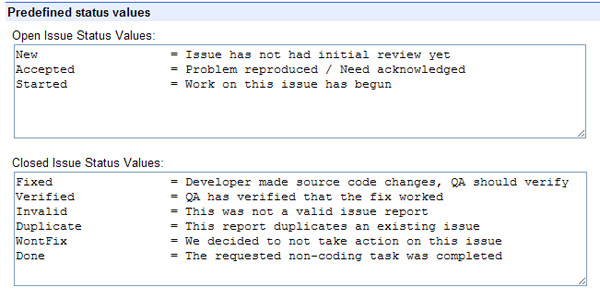
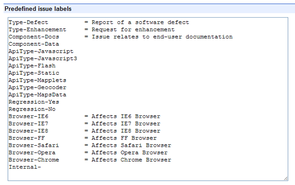
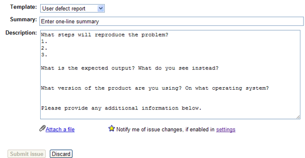
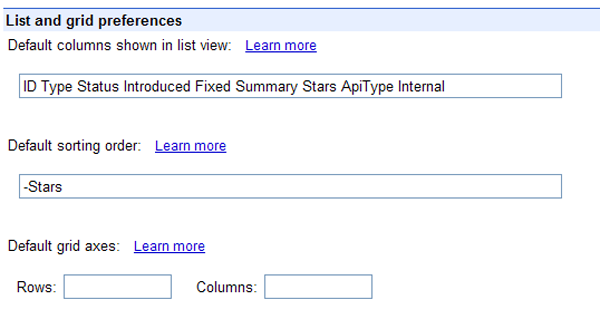
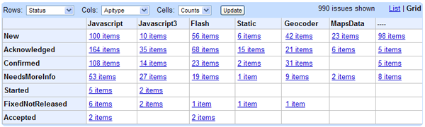
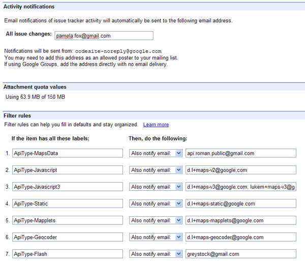
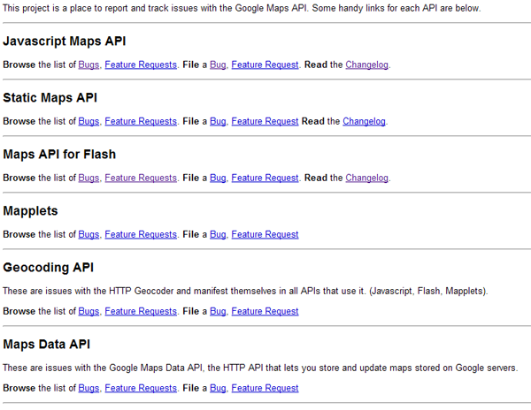

Issue Tracking¶
A public web API is one of the hardest types of software to write, because your audience is unknown and their use cases are infinite. If you are designing an API for internal use within your company, you can pretty much understand how they are expecting to use it and make it do what your colleagues want. But when you are designing an API that can be consumed by any web developer anywhere in the world, you can predict how a good portion of those developers will use it - but there will always be a fraction that wants to use it differently.
At last count, the Google Maps API is used by more than 300,000 developers. Most of them are simply putting a map on a page, and dotting some markers on top. But a handful of them are using it for something completely different. You could ignore that handful, but often times, those innovative developers are the ones that attract many users and get other developers excited about your API.
The basic point is this: your API is not perfect, atleast not to everyone using it. Your API will have bugs that developers suffer from (both the obvious cross-browser compatibility bugs, and the more subtle its-not-what-the-developer-expected bugs) and your API will lack in features that developers want. Developers don’t expect your API to be perfect, but they do expect for their voice to be heard when they report a bug or request a feature. Your developers should be helping you shape the future of your API, and listening to their issues is a way of showing them that you care about their feedback. (You don’t need to implement every feature or fix every bug, but you should listen regardless).
When you’re small and starting out, you can handle this in a forum, but when you get beyond a certain threshold of developers and bugs, you really should start using an issue tracker.
Issue Tracker Features¶
An issue tracker is a structured way for developers to voice their needs and wants, and it typically includes these features:
- Comments: Gives other developers an opportunity to comment on the issue, to give workarounds, additional data, or additional use cases.
- Votes: Gives other developers a way to show their support for an issue (like by starring or voting for it.)
- Status: Gives the API team a way to change the status of issues, from Open to Closed, and everything in between.
- Duplicates: Gives the API team a way to mark issues as duplicates of eachother, so that all interested developers are subscribing to the same issue.
- Notification: Notifies interested developers immediately when an issue is closed (ideally by email), so that they can remove workarounds in their code or add blocked features.
- Categorization: Gives the API team a way to categorize the issues to make it easier to find issues affecting different aspects of the API.
- Search: Gives everyone a way to search and sort for issues that may be relevant to them.
- Statistics: Gives the API team a way to visualize which issues are the most important to developers, to help them prioritize their internal roadmap accordingly.
There are various public and open-source issue tracking systems, and many of them are related to either forum software or source code repository hosting software. You can often choose to only use the issue tracking aspect, however. Some popular ones are:
- JIRA: A full-featured issue tracker which can also be used for project tracking.
- Github: A git source host that includes simple but nearly full-featured issue tracking for each repository.
- Google Code Project Hosting: A code project host that includes issue tracking for each project. Similar to Github issue tracking, but with more customization and statistics.
- Bugzilla: A full-featured and open-source issue tracker, created by Mozilla and used by their products.
- Trac: A full-featured and open-source issue tracker which can be connected to a subversion repository if desired.
For Google APIs, we always use Google Code Project Hosting, so I am the most familiar with that. Read below for an in-depth discussion of setting up a Google Code issue tracker.
Issue Handling Guidelines¶
Regardless of which issue tracker you choose and what features it has, you should take care in responding to issues in a timely manner and reacting to issues in a way that benefits your API.
Responding to Issues¶
When you have an issue tracker for a product, you should make sure to be responsive to it on a regular basis. If you don’t respond to filed issues, developers will feel once again that they’re filing bugs into an abyss, and you’re back at square one. A good response rate to maintain is weekly - i.e. all new issues are responded to within a week of filing. There are a few ways to make sure of this.
EMail Filters¶
When a new issue comes into my GMail inbox, I set filters so that it is automatically labeled as an issue for a particular API (Maps, Wave, etc). If I see that the issue is very easy to respond to (like if its a duplicate or a misdirected issue), then I may immediately respond. If not, I add the tag “TRIAGE-LATER” and archive it. I have GMail setup using the multiple inboxes lab, so that the “TRIAGE-LATER” inbox is below my main one, a constant reminder of issues that need a response. Then, I can check that label every few days at work, and respond to the issues, in the order of oldest to newest.
Triage Meetings¶
It’s not always so fun to respond to isses by your lonesome - you may not feel confident in your answer, you may not know enough to respond, etc. When you have the resources to do so, it can be a much better experience to triage with colleagues.
On Maps API, we did triage meetings in person, and ordered the triaging by API, so that the JS API engineer only had to be there for first bit, and the Flash API engineer only had to be there for the last bit.
On Wave APIs, we conducted the triage the meetings inside a Wave, and it worked remarkably well. Once a week, I’d start up a wave with my colleague and the API engineering team mailing list, and paste the non-triaged issues in. Then, my colleague and I would pick a bug, indicate in the wave that we’re looking at it, converse about it for a bit, and indicate when we’d responded to it. By doing it in one wave, we were able to multi-task. I could work on a bug while still chatting with my colleague about his bug, and effectively, we get twice the bug triaging done. If we wanted a member of the API engineering team to give his opinion, we could bring him on the wave. We also used those meetings to respond to unanswered forum posts, as we had a similar response time goal for those. If there was a surge in issues in a particular week, we scheduled additional triage meetings. Wave is now deprecated, but perhaps Google Docs with commenting could be used in a similar way.
Some APIs also do their triaging over chat, IRC, etc. All that really matters is that you are responding to issues in a timely and efficient manner, in a way that works for you.
Reacting to Issues¶
One of the benefits of an issue tracker is that its data can be used to guide product decisions, like what bugs to fix or features to fulfill. Google Code issue trackers have the “starring” mechanism and sort-by-starring, so it is very easy to look at your issues and see which have been starred the most. It is also very easy to let that guide all of your product decisions - but it is dangerous to do so, particularly when it comes to feature requests.
When we first launched the Maps API for Flash, the Flash community rejoiced- and then a few vocal developers said “But why is there no AIR support?” They then created a feature request for AIR support and asked developers to star it in their blogs. We saw more activity on that AIR request than on any other request previously, and we acted on it. We went through a fair bit of engineering effort to make our API work for AIR, and we launched it, expecting a large response or increase in developers. This didn’t happen. Sure, a few AIR apps trickled in over the next few months, but nothing proportional to the amount of stars on that request.
So, you need to be careful when evaluating feature requests. You need to pay attention to whether an issue was blogged or linked by someone - that will distort the # of stars. You need to decide if this is a feature request that developers feel they “deserve to have” versus a request that most developers don’t realize they want, but will use up-the-wazoo if it existed. You also need to decide what requests will bring in more developers versus make the current users happier. You can use stars to guide you, certainly - but don’t let them make the decisions for you. (As we learned the hard way).
On the other hand, it is quite useful to use stars to guide your bug fixes timeline, as those numbers aren’t often distorted. For example, if a developer files a bug, and no other developer stars that other bug for months, then you can probably safely assume that the bug is a very-low-priority or wont-fix. If a developer files a regression bug, and 10 other developers star it on the same day, then there is a good chance that it is a high-priority bug. You should keep in mind which bugs are preventing further development and which bugs have viable workarounds - you may even want to label an issue with “Workaround-True” to make it easy to visualize that. As much as it sucks, developers are used to working around issues (especially on the web), and are often happy if they have an easy-to-implement workaround. If there’s none at all- well, you better get that fix in stat.
Google Code Issue Tracker¶
When I started at Google, we did not use issue trackers for any of our APIs, and I soon realized that we really needed to. After trying a few custom solutions, I discovered Google Code Project Hosting and created the Maps API issue tracker. Nowadays, most every Google API has an associated Google Code issue tracker.
The Google Code issue trackers are full-featured, including:
- Commenting
- Labels
- Templates
- Starring
- Email Notification
- RSS feeds
- Custom Search & Sort
- Full Read/Write HTTP API
- Wiki Pages
They are both simple in their interface, but through the ability to specify custom labels and templates, they can be customized to support a wide variety of APIs. I’ve written up my customization tips here. You should also read through the Issue Tracker official documentation.
Setup¶
If you’re going to use a Google Code issue tracker, here’s a walkthrough of configuring it, with an explanation of what I’ve configured and why. Most of the following can be configured in the “Administer->Issue Tracking” control panel.
Labels¶
A “label” is basically metadata about an issue in the form of a label name and value - e.g. “ApiType-JavaScript”, “Type-Defect”. The issue trackers come with a set of suggested labels, based on those commonly used in software projects, but you can also suggest your own custom labels. When you use labels on issues, you can then search and sort by labels, and link to those results (e.g. all open Maps API bugs). Basically, labels are everything, and the more you use and customize labels, the more useful your issue tracker will become.
Status label¶
One label has a bit of a special status - and that is, conveniently, the “Status” label. This label indicates to the issue tracker whether an issue is open or closed, and that affects the searchability of an issue. By default, searches are only performed on open bugs, as typically users aren’t affected by fixed bugs. So, the issue tracker lets you designate the various values that equate to open versus closed.
The default status values are shown below:

After using those defaults for a while, I quickly realized that they didn’t quite work for my needs. Here are the status values that I use in the Google Maps API issue tracker:

Here are the changes I made and why:
- “Accepted” -> “Acknowledged/Confirmed”: The default values only contained one way of saying “Yes, we’ve seen this issue and noted it as a real issue,” and that value was “Accepted.” This worked fine for bugs, but not for feature requests. Developers thought that “Accepted” meant that we were actually taking on the feature request, and wondered why it was taking so long to fulfill their requests - when in fact, we simply meant to say that it was a valid request, and that we might fulfill it one day, given substantial resources and evidence of its of its utility to other developers. So, we now use “Confirmed” for bugs, after replicating the bug ourselves, and “Acknowledged” for feature requests, after deciding it is a valid request for the scope of our API, and confirming it isn’t fulfilled in some other way (like by an open source library). Anecdotally, I believe this has led to less developers feeling teased.
- “NeedsMoreInfo”: Oftentimes, a developer posts what sounds like a valid bug, but doesn’t provide enough information to replicate. So, we use this label to indicate that we have reviewed the issue atleast once and are awaiting further clarification from the developer. Once they provide enough info, it moves on to one of the other labels. If they never provide the info after a substantial amount of time, we can assume the bug was not important enough to them and close it.
- “FixedNotReleased”: Since our API code changes happen internally and are not available for developers until the next release of the API, we can’t immediately mark an issue as fixed when it’s fixed internally. But, in the case of a bug, I like to let developers know that a fix is imminent, so that they can plan their own development accordingly. And at release time, I also find it handy to have a list of the issues that I think were fixed in that release, so that I can easily create a changelog. I will rarely use this for feature requests, since we often like the fulfillment of those to be a surprise. It can sometimes confuse developers who are new to the API when they see an issue marked as FixedNotReleased, so it can be helpful to leave a comment like “This bug has been fixed internally and the fix is expected to go out in the next release. Releases are weekly.”
- “PostElsewhere”: We often get people posting requests in issue trackers that don’t quite belong there. They either belong in a forum (i.e. it’s a developer looking for help debugging their own code), or they belong in a different issue tracker. When I mark an issue as PostElsewhere, I always leave a note about where they should post their issue, and I try to be as nice as possible (to avoid people feeling like they’re on an endlessly redirected phone call with customer support). It can be useful to review the PostElsewhere issues every so often to see if the messaging should be changed to reduce the number of misdirected issues.
Predefined custom labels¶
The issue tracker suggests the following set of predefined labels, for setting attributes like issue type, priority, OS, etc:

Depending on your project, you will probably end up changing most of these (or not using them). Here’s what I came up with for the Maps API:

- “Type”: I retained only the “Defect” and “Enhancement” values, as I didn’t find a need for the others. I have contemplated changing those values to “Bug” and “FeatureRequest” as that is the more common nomenclature these days.
- “Component”: Most issues are about the actual API code itself, but some issues are about related components: the documentation, and the maps data. To distinguish those from the engineering issues, I created components for them - “Docs” and “Data”. (And yes, I think that you should welcome developers filing documentation bugs - documentation usability is just as important as API usability).
- “ApiType”: Because of the overlap across the different Maps APIs (Flash, JS, etc) both in terms of issues and the engineering team, I decided to use the same issue tracker for all of the APIs. To make sure I could easily distinguish the issues (in links and searches), I created this label and its values. As a bonus, I can assign multiple values of this label to an issue if it crosses multiple APIs.
- “Regression”: The worst kind of bugs are regressions. If something worked for a developer and suddenly doesn’t work, then that is the first thing you should fix. To make sure I can easily see what current regression issues we have, I use this label. I typically only set the label in the case that an issue is a regression, and then search for “Regression-Yes”.
- “Browser”: The vast majority of the Maps API bugs are browser dependent, and I find that many bugs in web-based projects are browser-dependent. I use this label to designate the affected browser(s) for browser-dependent issues. I can then search for issues that our IE 6 experts can fix (it sucks to be known as an IE6 expert, but these things happen), and visualize the distribution of issues to see what browser is causing us the most headaches.
- “Internal”: This label is a bit different than the others, in that it has no preset values. I use this label on an issue so that I can relate it to the sister issue in our internal bug-tracking system (e.g. “Internal-1234567”). Though it can be a bit annoying to track issues both internally and externally, we track externally so that we can make private comments and attach code changelists to the issue. Some of my colleagues use greasemonkey scripts or Chrome extensions to easily visualize both internal and external data at once.
Caveat¶
Only members of a project can assign labels when editing an issue. Non-members can only leave comments or star issues. It would be handy if non-members were allowed to assign some labels to an issue, but not others (i.e. you wouldn’t want a non-member to mark an issue as fixed, but you would welcome them characterizing it as an IE8 issue). You can use issue templates (described next) to somewhat solve this need, however.
Issue Templates¶
When a developer click “New issue” in an issue tracker, they are given a default template to fill out, shown below:

This template gives standard questions for bug replication, and adds default “Type” and “Priority” labels. Now, after you’ve created a set of labels for your product, you will probably also want to customize this template for your own needs, and you may also want to create more than just a bug and feature request template. For the Maps API, I created special templates for each API, so that I could link developers to the relevant template for their API, so that I could assign the appropriate labels, and so that I could provide API-specific bug reporting instructions.

Since I wanted to make sure developers used templates whenever possible, I also modified the default generic user defect report to warn developers against using it:

You can also use templates to specify the default owner for issues, if you want to put a particular project member in charge of triaging the issues. However, you can accomplish a similar effect using notification filter rules (described below).
List & Grid View¶
The issue tracker provides various ways to visualize the issues, and numerous configuration options for the visualization.
The default view is list view, and this is what the developer sees when clicking “Issues” or doing a search. This view shows one issue per row, and a subset of the labels as the columns.

When looking at a list view, the developer can further configure it by sorting based on other columns (by clicking the arrows), or choosing to view other columns (by clicking the ”...” in the top right-hand of the header row).
If you want developers to see a particular sorting/labels by default (and you probably do), you can configure that in the settings. The default is based on the default labels:

You should change that depending on your project labels, and on which you think are most important to be visualized at a glance. Here’s what I chose for the Maps API:

Note that both the default options and my options specified that the sorting is by stars. That means that the most starred issues will be at the top. This is both a blessing and a curse - it means that developers looking for common requests will be more likely to find them without searching, but it also means that the most starred issues will tend to get more starred, since those issues are shown to them more than others. Just keep that in mind when you’re evaluating issues based on their starred count.
The other view is grid view, and it is a very cool view that I really should use more often. It lets you visualize issues in multiple dimensions, and can give you a better feel for your issue distribution across status and other label values. Here’s an example grid visualizing the status of issues across the various Maps APIs. Immediately, I know which APIs need more triaging and resources thrown at them.

It’s good to bookmark useful grid visualizations and revisit them once a month, to spot trends or support needs. I will admit that I haven’t used grid view as much as I should, so I don’t have further tips past that.
Email notifications¶
The issue tracker lets you choose to send all notifications of issue activity (new issues, changed issues, commented issues) to a particular address, and it also lets you set rules to send label-dependent notifications to a particular address. You can use this feature to make sure that issue changes are always brought to the attention of a person and/or group of people.
The default settings is to not send to anyone:

This setting is okay if you are very religious about bug triages and do them on a frequent basis, but as some filed bugs may in fact be quite urgent and need to be addressed within hours, I recommend sending all bugs to some attentive individual. You can also choose to send bugs to a Google Group, like one that contains just your product team, or one that is a help forum for the actual product. If you decide to send bugs to the latter, keep in mind that they can become quite noisy, and may deter developers from subscribing to the group. It very much depends on your particular developer community.
For the open source Maps API utility library, I send all new issues to the mailing list of project developers, and this makes the developers more likely to pick up an issue and respond to it. For the Maps API, I send all issues to myself, and then send API-specific issues to the relevant colleagues:

Homepage¶
After you’ve spent all that time creating custom labels, templates, and searches, you will want to make sure developers can find them easily. One thing you can do is modify the home page of your project (in Administer->Project Summary) to include all the relevant links.
For the Maps API, I list a section for each API, and then provide links to browse bugs & feature requests, and to file bugs & feature requests. These links address the most common reasons for developers coming to the issue tracker.

Some developers may ignore those links, click on the “Issues” tab, and be unsure how to deal with the long list of issues in front of them. If you find developers getting confused by that experience, you can replace the Issues tab with a wiki page (in Administer->Tabs), and that wiki page can describe how issue tracking works for your product. The OpenSocial issue tracker takes that route:

Table Of Contents
Search
Enter search terms or a module, class or function name.
Other Formats

You can purchase a print copy or download a PDF at Lulu.com.
You can also checkout the source files from Github.